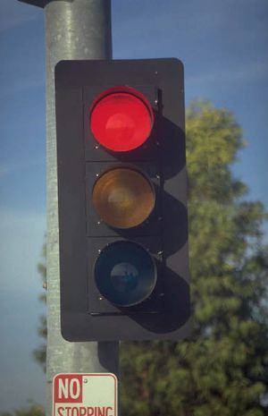
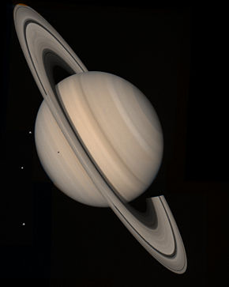
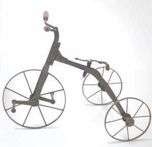

Saturnianos de Saturno
 De: La Frikipedia, la enciclopedia extremadamente seria.
De: La Frikipedia, la enciclopedia extremadamente seria.
 Árbol de Navidad Saturniano
Los Saturnianos son seres del planeta Saturno. Son las grandes mentes pensantes de nuestro universo, pero bastante torpes en los "trabajos manuales" y también son demasiado inocentes.
Su Navidad
Claramente, al ser de otro planeta, tienen otras creencias. Su dios es el llamado "Aquatengooooo", al que invocan tres veces al día para paliar su sed de sangre.
Aunque parezca mentira, me pongo colorado cuando me miras ellos también tienen árbol de navidad, pero es totalmente distinto al nuestro.Si, así es, amigos, es como un jodido semáforo, por eso, no os extrañéis ni os estriñáis cuando observéis a alguna persona mirando con ojos llorosos un semáforo, pues puede ser un Saturniano que tenga nostalgia, o una persona que acaba de salir del oculista.
Lenguaje básico de navidad Saturniano
Al tener un sistema foñológico más desarrollado tienen otro idioma completamente distinto al nuestro, y mucho más complejo, más complejo incluso que el castellano, el castellano-manchego-gijonés-andaluz-chino-popular-sueco y el gñapés juntos.
Vamos con algunas expresiones básicas:
- Feliz Navidad: Pablo Gnomu.
- Polvorón: Aghk-tragantado.
- Roscón de reyes: Roghk-ón met pornotecas.(La última palabra ha creado muchos problemas y confusiones a los Saturnianos)
- Regalos:¡TOOOOOOOMA!(Pronunciesen todas las "o")
- Belén:(De navidad)Gnomu limbic.
- Los reyes magos: Lot pornotecas maghk-lieght.
- Papá Noel: Bua Mongui-ghkt.
- Niño Jesús: Nene Quatenguilio.
- María: Droj-ata.
- José: Kuerk-nudo.
- Ganado ovino: Win-earn lom Muglax.
- Ogame: Mask puntos lek sombolaight.
- Todos los insultos conocidos y por conocer:...y?(Cuanto más larga sea la "y", más duro será el insulto)
- Mazapán: Au-agh.
- Pan: Agh.
- Harina: Ghhh.
- Kilo: Kik.
- Tonelada: Kak.
- Virgen: Notalkfolia.
- Nieve: ¡¡Uooooooohh!!
- Cabalgata de reyes: Enghckacharrum met pornotecas.
- Orgía: ¡Agh aaaeahhahhahhhhhahhhhhhh!(Se deben pronunciar todas las vocales correctamente)
Los Saturnianos son famosos por sus orgías navideñas (navideña y cuando no son navideñas),en las que cualquier Saturniano (SIEMPRE QUE SEA MAYOR DE EDAD) puede disfrutar de un sinfín de sentimientos, como, por ejemplo, el dolor, el aplastamiento, etc.
Su planeta
Su planeta es el llamado Aghtelio munoñnñnñn, Saturno para nosotros.Es el decimonoveno de los 52 planetas que existen en nuestro sistema solar, si contamos a los que me he inventado (Como Un-ano, Piesuno, Putón, Rolón, Etc, ABS...)
 Su planeta original, una mierda
Edad Medievoval de Hemoal Saturniana
Al igual que el resto de "civilizaciones", los Saturnianos pasaron por varias etapas a lo largo de su historia.La más destacable de esllas es la Edad Medievoval de Hemoal, llamada así por el descubrimiento de Hemoal, para gran alivio de los Saturnianos y de toda la galaxia.En el año 20.14.000,01, los Saturnianos dieron un gran avance evolutivo, pues descubrieron.....la cataputa catapulta.
Naves Saturnianas
Los Saturnianos son conocidos por tener la mayor flota de naves intergalácticas del universo y más allá girando a la derecha, pero no a la izquierda.
Entre sus naves destacan:
- NENEbulón 2.0: Nave de ligera de reconocimiento sin gran potencia de fuego.Se debe destacar que esta nave es bastante antigua, y en esa época los Saturnianos utilizaban como proyectil hagua en estado humungoso.
 La nave más temida de los Saturnianos, la Elisticus
- Elisticus: Esta nave fue engendrada con el deseo de ir más rápido que un chino con un petardo en el culo.La más rápida hasta la aparición de su predecesora, la Elisticus 5.0.3.2.6.9.1.0.12.3.
- Culombius 3000: Creada en la novena era de reputicaghlemanión (lease 1990 d.C.) debido a la necesidad de orgías en órbita.Estas naves quedaban inutilizadas después de cada orgía, y también quedaban hechas un asco.
- Elisticus 5.0.3.2.6.9.1.0.12.3: Esta hipernave ultra-mega-super-giga-chupi-guay la creó un ser Saturniano llamado Ignus Lastren Lapopa.Se conoce que el creador tenia el culo muy gordo y con una nave normal no bastaba para moverlo.
¿Sabias qué...
- ...los Saturnianos vienen de Saturno, pero prefieren la Tierra? Esto se debe a que la Tierra tiene forma de plátano, y a ellos les encantan los plátanos...
- ...el idioma de los Saturnianos era, originalmente, el mismo que el arameo-sirio-chino-judeo-ornitorrincoide?
- ...en Saturno no hay jamón?
- ...los Saturnianos pueden caerse desde un avión a 150 km de altura, sobrevivir y decir nada más llegar al suelo "cayó nene"?
- ...los Saturnianos no distinguen bien los colores?
- ...a los Saturnianos no les gusta el sabor a rica mierda?
- ...en Saturno no hay prostíbulos?
- ...hay un 50% de probabilidades de que esto sea verdad, y un 350.000.240.000% de probabilidades de que sea mentira?
- ...los tres puntos suspensivos (...) significan para ellos: "introduceme tu aparato reproductor por las fosas nasales sin ningún miramiento y luego "avergüenzate" en mi cara y escúpeme en la boca"?
- ...a ti te gustaría que te hiciesen todo eso?
- ...los Saturnianos tienen problemas con la semántica?
- ...los Saturnianos sufren "acojinamiento"?
- ...se inyectan morfina en las gónadas?
Grandes personajes de la historia Saturnianos
- Cristóbal el Colón
- Tú
- Yo
- Tu awelita
- Jorge Arbusto(Por fuerza tenía que ser de otro planeta)
- Pedro de las Fuentes Emanantes
- Ruperta
- Fray Luis de Tigre
- El rey Carolo y todo su imperio Carolingio
- Jorge de Montemenor
- Lope de Vega de Tuercespina
- Tarso de Molino
- Calderón de la Embarcación
- Quette Torras al Sol
Frikipedia 2005-2016, Licencia
GFDL 1.2 - Extraído por FrikiLeaks